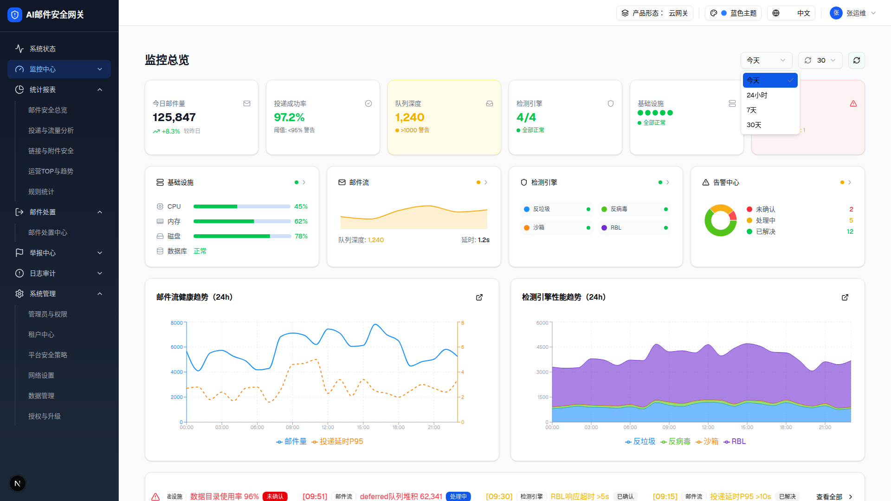
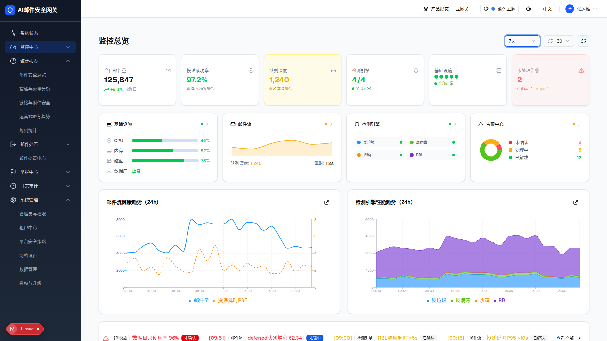

1 下拉打开态（浏览器实测）

下拉打开：今天（高亮）/ 24小时 / 7天 / 30天
可交互预览（点击「今天」trigger 展开选项，选择更新文案）
对齐 demo D-01：切换范围仅更新 trigger 文案，KPI/图表数据静态不变（demo 的 kpiData/trends 为模块常量，不随范围重取）。
选项清单（实测）
| 选项 | value | aria-selected（打开时） | 选择后行为 |
|---|
| 今天 | today | true（默认） | setTimeRange("today") |
| 24小时 | 24h | false | 仅更新选中值 |
| 7天 | 7d | false | 仅更新选中值（实测 DOM 其余部分零变化） |
| 30天 | 30d | false | 仅更新选中值 |
选择「7天」后整页截图

选中 7 天后：trigger 文案变为「7天」，KPI/图表/告警均无变化（静态 mock，差异 D-01）
DOM 树比对结果（选 7d 前 vs 后，浏览器实测）
| 比对项 | 选择前 | 选择后 | 是否变化 |
|---|
| 卡片数 | 13 | 13 | 否（✅ 与静态 mock 一致） |
| 按钮数 | 7 | 7 | 否 |
| 图表数（recharts-surface） | 10 | 10 | 否 |
| trigger 文案 | 今天 | 7天 | 是（唯一变化） |